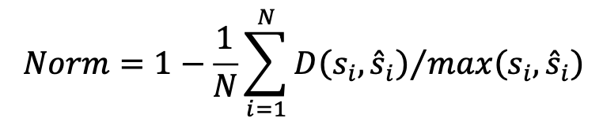

Evaluation criteria
The participants are required to output non-repeating subtitles and concatenate them
for each video. For a given video, subtitles of adjacent frames may be the same, and
the participants are required to deduplicate them and output subtitles. Normalized
metric in terms of Normalized Edit Distance (1-N.E.D. specially) will be treated as
the official ranking metric.
We will evaluate the predicted transcription with
the Normalized Edit Distance (N.E.D), which is formulated as:

where D(:) stands for the Levenshtein Distance, and and denote the predicted
subtitles in string and the corresponding ground truths for each video. N is the
number of the test videoes.
Note: To avoid the ambiguity in annotations, we preform preprocessing before
evaluation: 1)The English letters are not case sensitive; 2) The Chinese traditional and
simplified characters are treated as the same label; 3)The blank spaces and symbols
will be removed; 4) All illegible videoes will not contribute to the evaluation result.